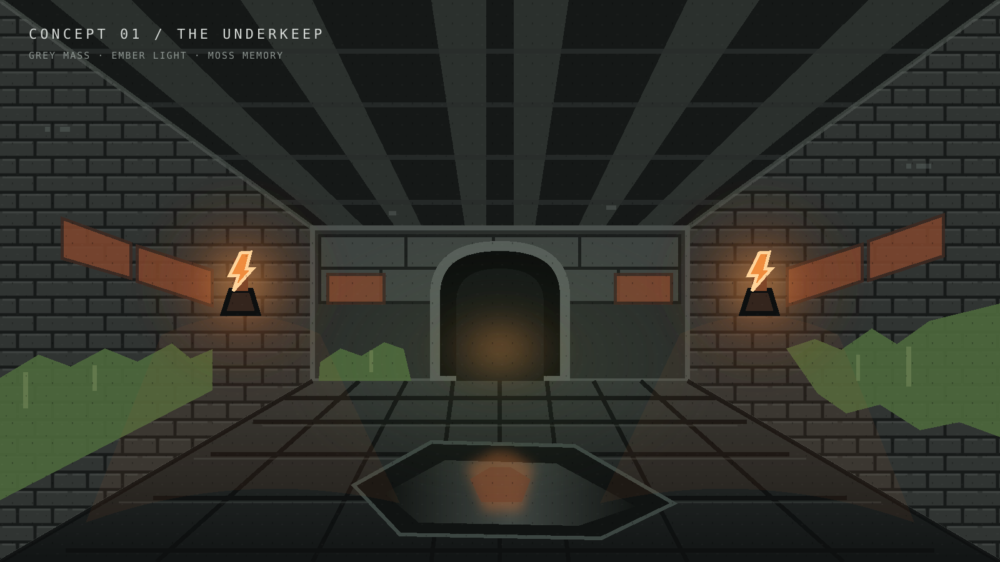
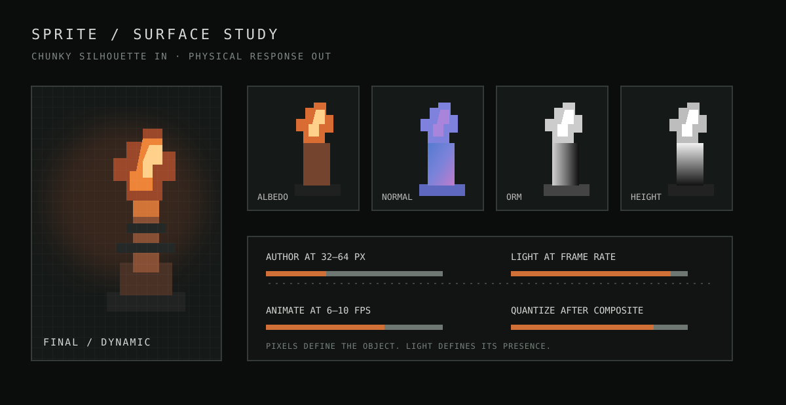
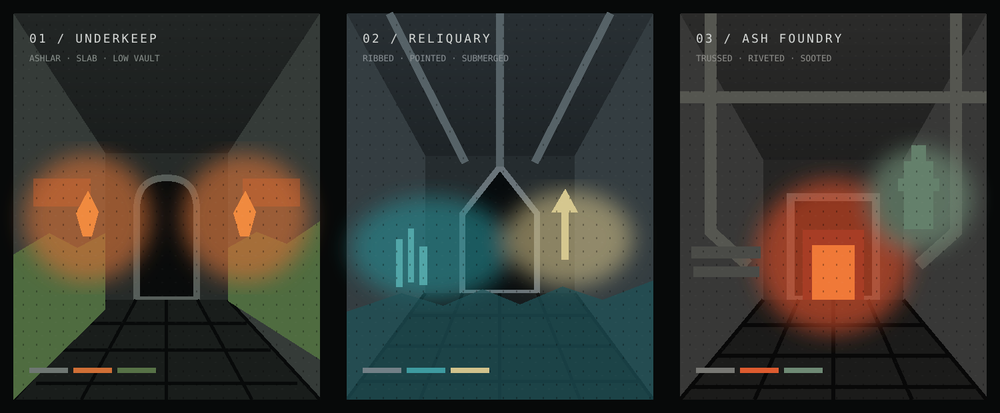

Chunky first
One-pixel decisions must survive at gameplay distance. Prefer graphic masses and readable silhouettes over painted detail.

Visual identity document · August 2026
Dungeoneers should look remembered, not merely old: hard sprite silhouettes and stepped colour held inside a world of wet stone, responsive materials, moving shadows and believable light.
01 / North star
The image must read as a retro dungeon crawler at a glance, then reveal contemporary depth in motion. Geometry, texture resolution, animation cadence and palette carry the nostalgia. Light, shadow, PBR, fog, parallax and reflection make that deliberately simple art feel physically present.
Do not smooth the pixels to make the world modern. Make the pixels react to a modern world.
One-pixel decisions must survive at gameplay distance. Prefer graphic masses and readable silhouettes over painted detail.
Neutral masonry, metal and darkness own most of the frame. Accents locate heat, life, danger and reward.
Base materials explain what a surface is. Modifier textures explain what happened to it.
Flicker, occlusion, reflections and moving highlights supply moment-to-moment life without adding visual noise.
The thesis
“A screenshot belongs to 1994.
A second of motion belongs to now.”
02 / Colour constitution
Every dungeon level owns one neutral family and no more than two accent families. “Family” means a controlled ramp, not one hex value: ember includes brown through orange; moss includes black-green through sage.
This is a composition target, not a per-frame audit. Let some rooms be almost monochrome so accent-rich encounters feel earned.
Current visual family
Chroma hierarchy
If warm brick fills a wall, push it toward warm grey. Reserve the bright ember ramp for flame, edge light, loot and focal trim.
03 / Surface grammar
Separate construction from history. A brick remains brick across the level; moss, damage, soot, blood and puddles are masks that accumulate differently by room role and environmental logic.
Base form
Brick bond, ashlar scale, slab rhythm, arch profile, ceiling system. Locked for the level.
Material set
Albedo + normal + roughness/metal/AO + height. Low-resolution and tileable.
Modifier maps
Moss finds seams; puddles find lows; soot climbs above flame; damage breaks exposed edges.
Runtime response
Dynamic lights, shadow rays, AO, POM, fog and SSR reveal the stack in motion.
Modifier logic
Avoid
04 / Sprites
Sprites are emphatically flat in authorship and convincingly present in the world. Their silhouette stays chunky; their normal, ORM and height companions let nearby light rake across them like small pieces of stage scenery.

Author to the smallest readable footprint. Upscale with nearest neighbour only.
Object must survive as dark mass, body midtone and emissive/focal highlight.
Stepped sprite animation preserves cadence. Desynchronise flicker phases.
Albedo, normal, occlusion/roughness/metal and height share exact pixel registration.
05 / Light & atmosphere
Modern lighting is allowed to be smooth in space and time; the final image is not. Dynamic light exposes material response, then colour banding and palette quantisation pull the result back into the retro contract.
No broad colour wash. Neutral ambient establishes readability; visible fixtures own accent colour.
Shadow masses should frame routes and threats, not turn the whole room into the same black rectangle.
SSR belongs to puddles and polished accents. Rough stone should not look varnished.
Layered frequencies and unique phase offsets; never a synchronized sine wave across the room.
06 / World structure
A level may introduce a new construction era, silhouette grammar, material family and accent pair. A room within that level may only tune mood: light rhythm, fog, wetness, damage, growth and prop density.

Clear sightlines, low modifier density, steady light. Establish the level grammar.
Same arch and stone kit; more seam moss, quieter fog, a focused pool of light.
Same kit again; reduced moss, more braziers, damaged floor and deeper shadow pockets.
07 / Production contract
The game is already data-driven. Treat this document as constraints for those systems, not a parallel art wish-list.
themes.jsonarchitectures.jsonOwns architectural silhouette, pools and the per-level palette profile.
generator.jsmaterial-modifiers.jsonRoom role reweights growth, damage, water, sprite selection and light density.
walls.jsonfloors.jsonceils.jsonDefines material purpose, base colour, roughness, height and procedural shape.
renderer-gpu.jsshaders-wgsl.jsComposes PBR, lights, sprites, SSR and fog before the palette finish.
Review every new level
Red flags
Definition of done
A level is art-complete when one neutral family, two accents, one architecture grammar and one coherent material kit can produce many room moods—without any room looking as if it belongs to another floor of the dungeon.